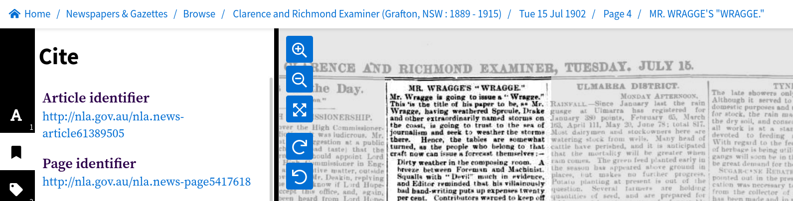

15.1. Accessing data about newspaper and gazette articles#

Attention
This guide is currently under development. For more information and discussion see the list of issues on GitHub. Comments are welcome.
What are articles?#
When you search in Trove’s digitised newspapers, you’re searching for articles. The boundaries of articles are defined as part of the OCR process. In most cases they represent a single piece of content with a heading and some text (or an illustration). But sometimes blocks of content are grouped together. Advertisements, for example, are often grouped as a single ‘article’ headed ‘Advertising’. A single article can also be split across multiple pages.
Article links and connections#
Articles exist at the bottom of a hierarchy of newspapers, issues, and pages. Article metadata includes information linking articles to other levels in this hierarchy, but the type and form of these links varies.
Article identifiers#
Every newspaper article in Trove has its own unique identifier. This identifier is used in persistent links to articles on the Trove web site. In the web interface, you can find the identifier under the article’s ‘Cite’ tab, it’ll look something like this http://nla.gov.au/nla.news-article163325648

Fig. 15.1 Example of an article identifier found in the ‘Cite’ tab.#
If you follow an article identifier you’ll get redirected to a different url that looks like this https://trove.nla.gov.au/newspaper/article/163325648. Notice that the number at the end of the identifier and the redirected url are the same, 163325648. You can use this numeric identifier with the /newspaper endpoint of the Trove API to retrieve metadata and full text.
Articles and newspaper titles#
Links to newspaper titles are perhaps the most straightforward. Each article is linked to a single newspaper title by the title’s unique identifier. An article’s metadata record includes a field for title that includes both the numeric identifier and the newspaper’s masthead. for example:
"title": {
"id": "101",
"title": "Western Mail (Perth, WA : 1885 - 1954)"
}
You can use the newspaper’s id to request more information from the newspaper/titles API endpoint.
Articles and issues#
There are no direct links from articles to newspaper issues. However, articles share a date with their parent issue, so it’s possible to use the date to connect them. For example you can use a date search to find all the articles in an issue.
But what about ‘editions’?
One problem in trying to link articles with issues is that newspapers often published multiple editions per day. So to identify a specific issue you might need both a date and an edition. This is not really possible in Trove, because editions are rarely documented. This is something to keep in mind if, for example, you’re trying to match a Trove article with an original paper copy, or trying to track down a pre-Trove reference – a date might not be enough!
Articles and pages#
There are two ways in which articles are linked to pages. The first is simply by the page value, which is a number indicating the sequence of a page within an issue. This usually corresponds to the page number printed on the page, however, sometimes issues include separately numbered supplements. You can tell if a page is part of a supplement by looking at the confusingly-named pageSequence value – it will typically include an ‘S’ after the page number. There might also be a pageLabel value that provides the number printed on the page within the supplement.
Here’s an advertisement for abstestos cement in a 1957 building supplement published as part of the Australian Women’s Weekly. The article’s metadata record includes the following page values:
"page": "82",
"pageSequence": "82 S",
"pageLabel": "2",
This means the article is on the 82nd page of the issue, but this page is within a supplement and is numbered ‘2’ on the printed page.
The second way articles are linked to pages is by the page’s unique identifier. If you set reclevel to full when requesting article records from the API, the metadata will include a trovePageUrl value, for example:
"trovePageUrl": "https://nla.gov.au/nla.news-page5417618"
If you follow the url it will display the page in the Trove web interface, but the numeric part of the url uniquely identifies the page and can be used to do things like downloading an image of a page.
What happens when articles are split over multiple pages?
The page value in an article’s metadata is only ever a single number. If an article is split over multiple pages, then the page value will indicate the page on which the article begins. The metadata doesn’t include the numbers of any subsequent pages. You can, however, find out whether an article is split across pages by looking at the pdf field. This field contains a list of links to page PDFs. The number of links will tell you the number of pages the article appears on. (But note that the pdf field seems to be missing from Australian Women’s Weekly articles.) The PDF links also include the numeric identifiers for each page.
Article metadata#
The metadata associated with newspaper and gazette articles in Trove includes the basic information you’d expect to put in a citation, like the article’s headline, publication date, newspaper, and page number. Additional fields are added by the OCR and data ingestion processes, such as internal links, the number of words, and the article category. User activity also adds data relating to tags, comments, lists, and corrections.
Individual articles#
To access metadata relating to an individual article you need the article’s numeric identifier. You can then construct an API request url by adding the identifier to the /newspaper/ endpoint. For example, if the article identifier was 61389505, the API request url would be:
https://api.trove.nla.gov.au/v3/newspaper/61389505
You can add additional parameters to the url if, for example, you want the metadata in JSON format.
https://api.trove.nla.gov.au/v3/newspaper/61389505?encoding=json
Here’s the metadata returned by this request:
{
"id": "61389505",
"url": "https://api.trove.nla.gov.au/v3/newspaper/61389505",
"heading": "MR. WRAGGE'S \"WRAGGE.\"",
"category": "Article",
"title": {
"id": "64",
"title": "Clarence and Richmond Examiner (Grafton, NSW : 1889 - 1915)"
},
"date": "1902-07-15",
"page": "4",
"pageSequence": "4",
"troveUrl": "https://.nla.gov.au/nla.news-article61389505"
}
Search results#
You can search for newspaper and gazette articles using the Trove API’s /result endpoint, just set the category parameter to newspaper.
Don’t get your categories mixed up!
The term category is used in two completely different contexts in Trove. It’s used to describe the top-level groupings of resources, such as ‘Newspapers & Gazettes’, ‘Books & Libraries’, and ‘Magazines & Newsletters’. But it’s also used to describe different types of newspaper and gazette articles, such as ‘Article’, ‘Advertising’, and ‘Family Notices’.
To limit search results to either newspapers or gazettes use the artType facet :
l-artType=newspapers–
or
l-artType=gazette–
Notice that newspapers is pluralised, but gazette is not.
You can use the q parameter to supply search keywords. The query string can be anything you might include in Trove’s ‘simple’ search box. Results can also be filtered using a number of facets, such as category, state, illustrated, and decade.
==More detail on constructing searches here or somewhere else?==
For example, to get the first 100 results of a search for "clement wragge" AND cyclone, limited to news articles published in Queensland, you would do something like:
import requests
params = {
# Search string -- note the use of double quotes to search for a phrase
"q": '"clement wragge" AND cyclone',
"category": "newspaper",
"l-artType": "newspapers",
# Limit to articles published in Queensland
"l-state": "Queensland",
# Limit to news-ish articles
"l-category": "Article",
# Return 100 results
"n": 100,
"encoding": "json",
}
# Supply API key using headers
headers = {"X-API-KEY": YOUR_API_KEY}
response = requests.get(
"https://api.trove.nla.gov.au/v3/result", params=params, headers=headers
)
data = response.json()
The list of article records can be found at data["category"][0]["records"]["article"]. Here’s the first record:
data["category"][0]["records"]["article"][0]
{'id': '169851997',
'url': 'https://api.trove.nla.gov.au/v3/newspaper/169851997',
'heading': 'CYCLONE FORECASTER. MR. CLEMENT WRAGGE.',
'category': 'Article',
'title': {'id': '837', 'title': 'Daily Mercury (Mackay, Qld. : 1906 - 1954)'},
'date': '1927-03-08',
'page': '3',
'pageSequence': '3',
'relevance': {'score': 540.29248046875, 'value': 'very relevant'},
'snippet': '"Coyyan" writes in the Cairns \'Post\':-- Mr. Clement Wragge was generally referred to as the Inclement Wragge," purely on account of',
'troveUrl': 'https://.nla.gov.au/nla.news-article169851997?searchTerm=%22clement+wragge%22+AND+cyclone'}
You can request a maximum of 100 records with a single API request. To download metadata from all the articles in a set of search results you need to make multiple requests. See HOW TO: Harvest a complete set of search results using the Trove API for examples of how to do this.
Get extra metadata fields#
You can use the reclevel and include parameters with either the /newspaper or /result endpoints to control the amount of metadata provided about each article. For example:
Setting reclevel=full adds the following fields:
trovePageUrl– website url pointing to the page on which the article was publishedillustrated– is this article illustrated (“Y” or “N”)wordCount– number of wordscorrectionCount– number of OCR correctionstagCount– number of tags attached to this articlecommentCount– number of tags attached to this articlelistCount– number of lists this article has been added tolastCorrection– details of last OCR correction, includes date and user namepdf– link to download a PDF version of the page this article was published on
Warning
Note that while wordCount, correctionCount, tagCount, commentCount, and listCount are numbers, the API returns them as strings. If you want to run any mathematical operations on them, you’ll first need to convert them into integers.
word_count = int(article["wordCount"])
Use the include parameter to add details about tags, comments, and lists. For example, setting include=tags will add a list of any attached tags to the article metadata:
"tag": [
{
"lastupdated": "2017-01-02T02:46:49Z",
"value": "Meteorologist - Clement Wragge"
},
{
"lastupdated": "2017-01-02T02:46:49Z",
"value": "Novelist - Marie Corelli"
}
]
Find the total number of articles in a search#
You can also access metadata about a search. API search results include a total value that tells you the number of articles matching your query. If we don’t include any search parameters, we can use this to find out the number of newspaper and gazette articles in the whole of Trove!
import requests
# Set n to 0 because we don't want any records
params = {"category": "newspaper", "n": 0, "encoding": "json"}
# Supply API key using headers
headers = {"X-API-KEY": YOUR_API_KEY}
response = requests.get(
"https://api.trove.nla.gov.au/v3/result", params=params, headers=headers
)
data = response.json()
data
{'category': [{'code': 'newspaper',
'name': 'Newspapers & Gazettes',
'records': {'s': '*',
'n': 0,
'total': 244541650,
'next': 'https://api.trove.nla.gov.au/v3/result?category=newspaper&n=0&encoding=json&s=*',
'nextStart': '*'}}]}
Note that the example above doesn’t return any articles because it sets the n parameter to 0.
The current number of newspaper and gazette articles is in the total field.
import datetime
# Get the total number of articles
total = data["category"][0]["records"]["total"]
# And today's date
today = datetime.datetime.now().strftime("%d %B %Y")
# Display the result
print(f"As of {today}, there are {total:,} newspaper & gazette articles in Trove")
As of 06 September 2023, there are 244,541,650 newspaper & gazette articles in Trove
Using facets to get aggregate data about articles#
Links to QueryPic and other examples
Get positional information from OCR#
Additional metadata relating OCRd text to its position on a page can be scraped from the Trove web site, see How to get information about the position of OCRd newspaper text
Trove Newspaper Harvester#
==Where should this go?==
metadata, text, images, PDFs
no limit
metadata file captures query details
Get metadata for an individual article#
Text#
Newspaper text is segmented by article. The text is generated by OCR, with manual corrections by volunteers.
API#
include=articletext
Note: includes html Note: not the AWW (have to scrape)
Trove Newspaper Harvester (including AWW)
Images and PDFs#
PDF proxy
Save articles as images
Save just the illustrations as images
Save words as images